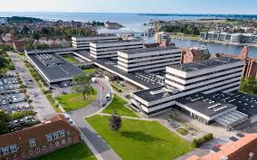

Tourist Information
Get maps, brochures, guided tours, and help from local experts. Our tourist office provides all the information you need to explore Sønderborg comfortably.
Learn More
Public Transport
Buses, ferries, and bike rentals are available throughout the city. Sønderborg offers a well-connected transportation network.
View Routes

Emergency Services
Hospitals, pharmacies, police stations, and safety services are easily accessible throughout the region.